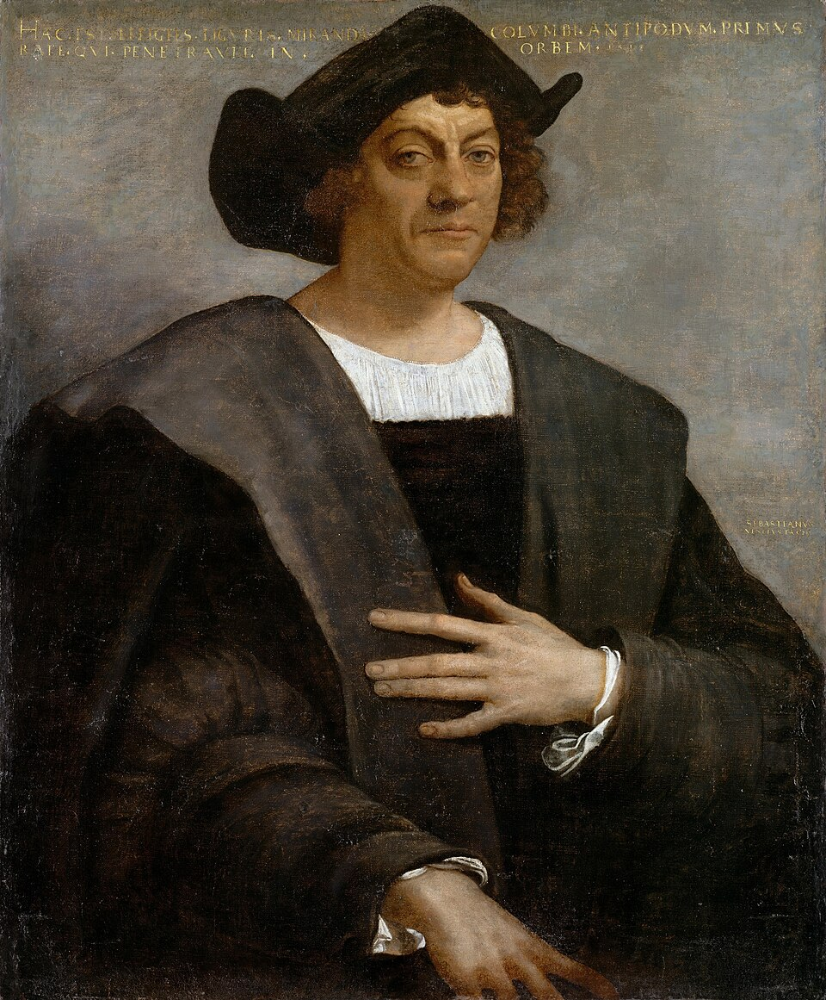

Actividad 10 · Colón y la historia
Buscaba una ruta a Asia por el oeste. Encontró un continente que no estaba en sus mapas y cambió la historia de los dos lados del océano.

Navegante nacido en Génova hacia 1451. Pasó años pidiendo apoyo para su proyecto hasta que los Reyes Católicos, Isabel y Fernando, lo financiaron en 1492 con las Capitulaciones de Santa Fe.
Murió en Valladolid en 1506, convencido de que había llegado a las Indias.
Colón quería demostrar que la Tierra era redonda, contra quienes creían que era plana.
Los sabios de su época ya sabían que era redonda. La discusión era sobre su tamaño: Colón la calculó mucho más pequeña de lo que es, y por eso creyó que Asia estaba cerca.